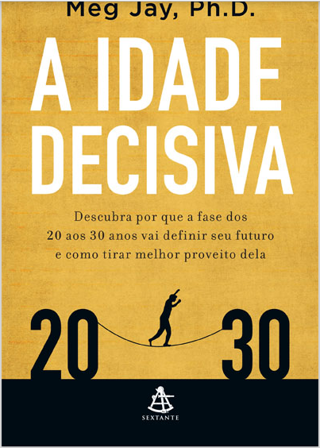

Idade Decisiva
NOTA DA AUTORA
Este livro se baseia no meu trabalho com jovens na faixa dos
20 aos 30 anos quando atuei como psicóloga clínica em meu
consultório particular em Charlottesville, como professora na
Universidade da Virgínia, como psicóloga em Berkeley e também
como professora na Universidade da Califórnia. Ao longo destas
páginas, esforço-me ao máximo para contar as histórias comoventes dos pacientes e estudantes que tanto me ensinaram sobre a
juventude. Para proteger a privacidade deles, alterei nomes e detalhes. Em muitos casos, criei personagens a partir de conversas
que tive em minhas sessões e de experiências que me contaram.
Espero que todo jovem que leia este livro se identifique com os
relatos aqui incluídos, mas qualquer semelhança com alguém
especificamente será mera coincidência